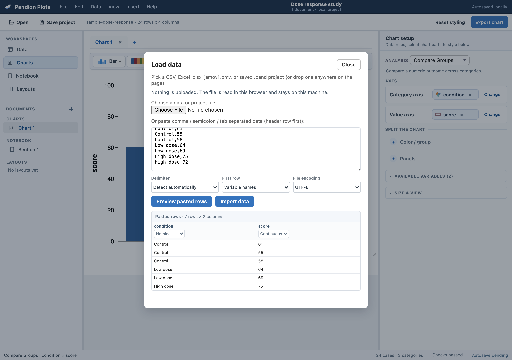
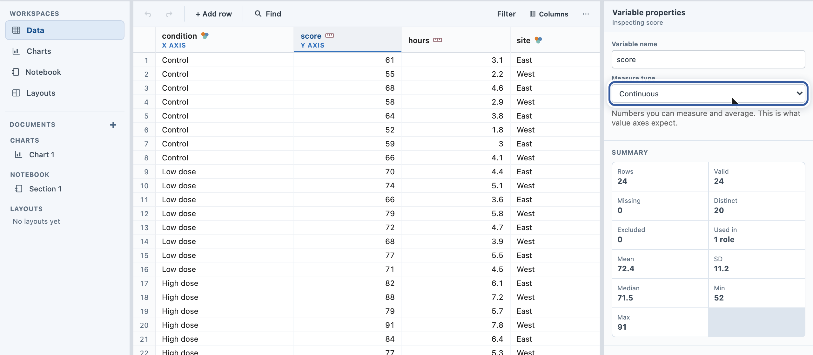
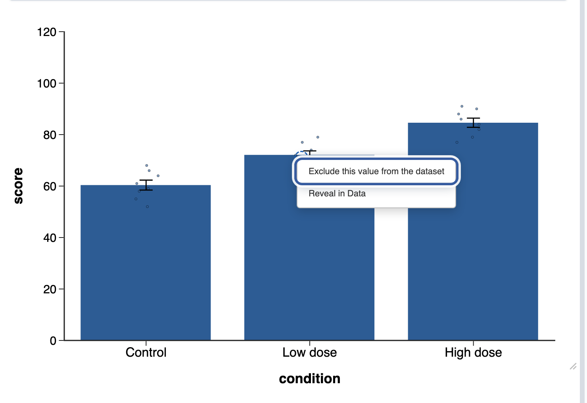
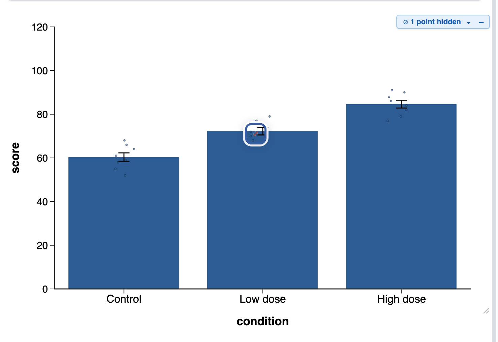
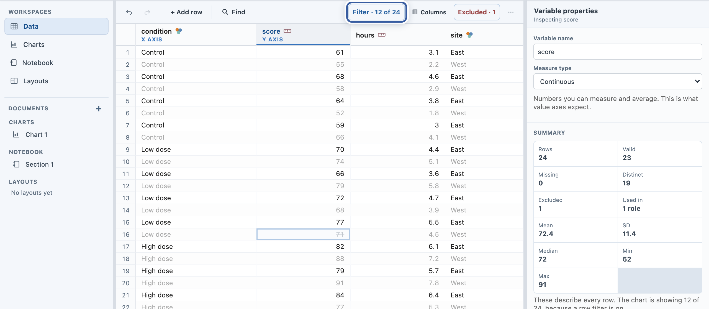

Learn · Data
Get your data ready.
The browser and desktop app include a full Data workspace: paste, inspect, fix, exclude, and filter without leaving the chart. This guide is specific to the standalone app; in jamovi you prepare data with jamovi’s own spreadsheet, as the jamovi guide shows.
1. Paste straight from a spreadsheet
Paste data on the welcome screen (or the Open button any time) opens the Load data dialog. Copy rows in Excel or Sheets, paste them in, and Preview data shows what the app understood before anything is committed.

Nothing is uploaded. Files and pasted rows are read in your browser and stay on your machine.
2. Check every variable’s type
Click a column heading and the inspector opens: Measure type plus a live summary (rows, valid, missing, distinct, mean, SD). Chart roles accept variables by type, so a number that imported as text is the single most common reason a variable refuses to land on a value axis; this menu is where you fix it.

3. Exclude a point, honestly
Sometimes one observation should sit out: a typo, an aborted trial. With Data points shown on the chart, right-click the point and choose Exclude this value from the dataset (the same menu’s Reveal in Data jumps to its row).


The exclusion is recorded in the data itself (the Excluded counter in the Data toolbar lists them all), so a saved project remembers exactly what was set aside, and why the numbers are what they are.
4. Filter rows
Filter in the Data toolbar keeps only the rows matching your conditions (equals, not equal, greater, less, is missing, is not missing). Filtered-out rows dim rather than disappear, and every chart follows the filter.

That completes the series. Back to the Learn page for the full list, or the user guide for the reference treatment of every control.